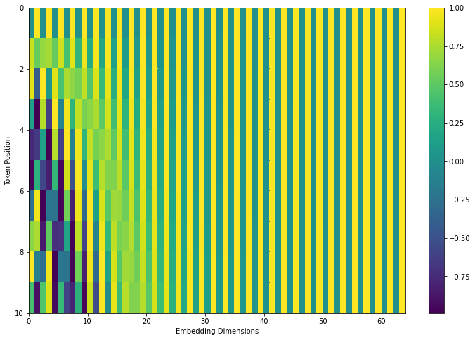

An extra pre-calculated input to go alongside word embeddings (see Transformers) to represent a word's "relative position" in a sentence. The input is the same length as the number of dimensions in the word embeddings.
Relative position
If you just embed 0, 1, or 2 to represent the 1st, 2nd, and 3rd position of a word in a sentence, any calculated weights would be meaningless if the word appears in a similar sub-clause in a longer sentence.
For example, if the phrase "black cat" was the first words of a sentence, you'd want "cat" at position 1 to pay attention to position 0, but if "black cat" were at position 10, you'd want "cat" at position 11 to pay attention to "black" at position 10.
Representation
If "cat" were a vector with 64 elements (with values like: (389.3, -0.128, 193.9, ...)), its positional encodings would be these 64-element vectors:
"cat" => 0th position => [0, 1, 0, 1, ...]
"hello cat" => 1st position => [.84, .54, .64, .73, .53, ...]
"Oh, hello cat" => 2nd position => [.91, -4.2, 1.00, 0.08, .90, ...]
Calculation
This is a graph of ten positions, for models with corresponding 64-dimensional embeddings. The graph's height can be made arbitrarily long:

The shape of a row is like a descending wave of sawteeth going from [-1,1], where the sharpness of the teeth is inversely proportional to the row's position. The resulting gradient weights will then correspond to the distance between related tokens.